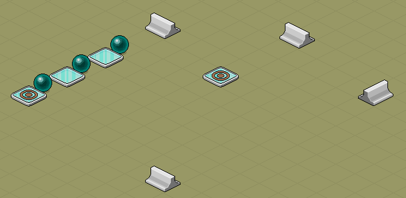
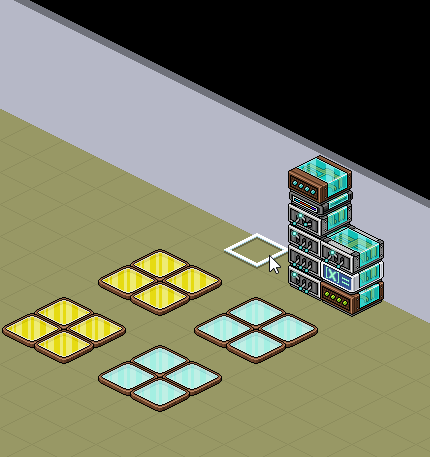

|
|
|
01.02.2026
Versteckte Wired-Funktion: Speicher-Reset
Entdeckt von: Verschiedene User (siehe Forschungshistorie zu jedem Abschnitt). Bezieht sich nur auf das .DE Hotel!
Vorgeschichte
Es waren einmal 3 Banzai Böden mit je unterschiedlichem Färbungsfortschritt. Plötzlich erschien ein 4. Banzai Boden und tat etwas Außergewöhnliches!! Es bewegte sich. Und da passierte es! Alle Färbungsfortschritte waren hinüber...
Das was ihr hier im GIF seht ist eine Art von Reset. So wird es zumindest von mehreren beschrieben. Zur Vereinfachung wird dieses und die folgenden Phänomene als Reset-Verhalten behandelt. Bemerkenswerterweise gehen die Team-Punkte hierbei nicht verloren. Nur der Färbungsfortschritt des Banzai Bodens selbst wird auf 0 zurückgestuft (die Färbfähigkeit bleibt erhalten). Daher kann man von einem Speicher-Reset sprechen. Es ist etwas, wofür es keine "normale" Funktion gibt, um das während einer laufenden Spielrunde zu erreichen. Dieses Zurücksetzen wurde übrigens häufig für AFK-LvL genutzt. Damit sparte man Zeit und Geld.
So wie Banzai Böden im GIF resettet werden, konnten Wireds früher durch Wired-Bewegungen resettet werden und das ermöglichte verschiedene Dinge. Das Resetten bezieht sich hierbei nicht auf Einstellungen im Wired, sondern während es in Aktion tritt. Heute ist das Resetten per Wired-Bewegung gefixt und wir haben eine alternative (viel bessere) Methode bekommen Wired-Speicher zu resetten. Eine Auflistung der möglichen Wired-Resets schien längst überfällig zu sein, da diese sehr unzureichend dokumentiert sind und man das vollständige Wissen darüber heutzutage so gut wie nie allein durch Zufall, Erfahrung oder Recherche erreichen kann. Vor dem Bug-Fix war dies allerdings dank Zufall zusammen mit einer guten Intuition ein ganzes Stück leichter möglich davon zu erfahren.
Aber das ändert sich nun mit dieser Aufstellung, die, ohne zu übertreiben, das geheimste Wired-Wissen beinhaltet, das es gibt! Eine 100 % technisch akkurate Behandlung des Themas ist aufgrund fehlender Programmcode-Kenntnisse der Wireds nicht möglich. Dennoch wurde die Übersicht nach bestem Wissen aufgearbeitet.
Aber das ändert sich nun mit dieser Aufstellung, die, ohne zu übertreiben, das geheimste Wired-Wissen beinhaltet, das es gibt! Eine 100 % technisch akkurate Behandlung des Themas ist aufgrund fehlender Programmcode-Kenntnisse der Wireds nicht möglich. Dennoch wurde die Übersicht nach bestem Wissen aufgearbeitet.
Effekt: Möbelrichtung ändern
Reset-Funktion: Wird die Wired-Box Möbelrichtung ändern umgeschaltet mit "Möbelzustände umschalten", wird er zurückgesetzt auf seine ursprüngliche Bewegungsrichtung (Pfeilrichtung, die man im Wired ausgewählt hatte).
Reset-Kontext: Das Möbel biegt ab, wenn er auf ein Hindernis trifft. Beim Umschalten der Wired-Box "vergisst" es, dass das Möbel auf ein Hindernis getroffen ist und deshalb eigentlich in die Abbiege-Richtung fahren sollte. Stattdessen fährt es in die ursprüngliche Richtung (wenn es bereits in die Start-Richtung fährt, ändert sich beim Resetten nichts).
Nutzen: Für Spielresets, wenn es instant seine Ausgangsposition und -bewegungsrichtung einnehmen soll oder allgemein seine Start-Bewegungsrichtung zurück bekommen soll ohne auf ein Hindernis treffen zu müssen.
Forschungshistorie: Es gibt wahrscheinlich keinen einzelnen, da es mehrere unabhängig voneinander entdeckten, aber es wird davon ausgegangen, dass 97marcel97 einer der frühen Entdecker war. Möglicherweise kannten Harkel, marius-K und/oder Togetherness dies zu dieser Zeit ebenfalls bereits. Betrifft die Zeit weit vor 2019.
Reset-Kontext: Das Möbel biegt ab, wenn er auf ein Hindernis trifft. Beim Umschalten der Wired-Box "vergisst" es, dass das Möbel auf ein Hindernis getroffen ist und deshalb eigentlich in die Abbiege-Richtung fahren sollte. Stattdessen fährt es in die ursprüngliche Richtung (wenn es bereits in die Start-Richtung fährt, ändert sich beim Resetten nichts).
Nutzen: Für Spielresets, wenn es instant seine Ausgangsposition und -bewegungsrichtung einnehmen soll oder allgemein seine Start-Bewegungsrichtung zurück bekommen soll ohne auf ein Hindernis treffen zu müssen.
Forschungshistorie: Es gibt wahrscheinlich keinen einzelnen, da es mehrere unabhängig voneinander entdeckten, aber es wird davon ausgegangen, dass 97marcel97 einer der frühen Entdecker war. Möglicherweise kannten Harkel, marius-K und/oder Togetherness dies zu dieser Zeit ebenfalls bereits. Betrifft die Zeit weit vor 2019.

Landet eine Kugel auf eine Ringplatte, wird nur diese Kugel resettet. Vor dem Fix wären alle gleichzeitig resettet worden.
Effekte: Punkte geben/ Punkte übertragen
Reset-Funktion: Beim Umschalten der Wired-Boxen wird "Wiederholungen pro Game" auf 0 zurückgesetzt, sodass es neu beginnt zu zählen.
Reset-Kontext: Hier werden keine Punkte resettet, sondern nur das Zählen, wie viel mal x-beliebige Punkte vergeben und erfolgreich abgeholt wurden. Die "Wiederholen"-Funktion bestimmt, wie oft man x-beliebige Punkte holen kann, aber das Resetten dieser Funktion ermächtigt zu bestimmen, wie oft man das (begrenzte) Wiederholen wiederholen möchte.
Nutzen: Man kann für dieselbe Spielrunde Zwischenresets einbauen, sodass durch verschiedene Levels oder Ähnliches erneut x-beliebige Punktdurchläufe ermöglicht werden können. Ist die Wiederhol-Funktion auf "unendlich" gesetzt, hat das Resetten keine Wirkung. Ersetzt aber nicht die Reset-Funktion, da "unendlich" keine definierten Zwischenpausen ermöglicht für das Einbauen von Herausforderungen.
Forschungshistorie: Höchstwahrscheinlich war Sternthomas2 einer der frühsten Anwender, da er sehr viel mit Punktwerten gearbeitet hatte. Vermutlich in den Jahren 2017/18. Es ist ebenso wahrscheinlich, dass noch einige mehr dies selbstständig herausfanden.
Reset-Kontext: Hier werden keine Punkte resettet, sondern nur das Zählen, wie viel mal x-beliebige Punkte vergeben und erfolgreich abgeholt wurden. Die "Wiederholen"-Funktion bestimmt, wie oft man x-beliebige Punkte holen kann, aber das Resetten dieser Funktion ermächtigt zu bestimmen, wie oft man das (begrenzte) Wiederholen wiederholen möchte.
Nutzen: Man kann für dieselbe Spielrunde Zwischenresets einbauen, sodass durch verschiedene Levels oder Ähnliches erneut x-beliebige Punktdurchläufe ermöglicht werden können. Ist die Wiederhol-Funktion auf "unendlich" gesetzt, hat das Resetten keine Wirkung. Ersetzt aber nicht die Reset-Funktion, da "unendlich" keine definierten Zwischenpausen ermöglicht für das Einbauen von Herausforderungen.
Forschungshistorie: Höchstwahrscheinlich war Sternthomas2 einer der frühsten Anwender, da er sehr viel mit Punktwerten gearbeitet hatte. Vermutlich in den Jahren 2017/18. Es ist ebenso wahrscheinlich, dass noch einige mehr dies selbstständig herausfanden.
Auslöser: Erreichter Punktwert
Reset-Funktion: Das Erreichen der Punkte eines Teams selbst wird resettet. Die Punkte bleiben unberührt, aber beim Reset geht die Information darüber verloren, dass jemand diese Punkte erreicht hat.
Reset-Kontext: Wird der Auslöser auf 10 Punkte gesetzt, reagiert er, wenn ein Team-Spieler 10 Punkte macht. Wird resettet, muss der Spieler nicht noch einmal 10 Punkte sammeln, um erneut auszulösen, sondern nach JEDEM Punkt wird erneut ausgelöst je Reset. Das lässt folgende Vermutung zu:
Da der Auslöser auch dann reagiert, wenn nicht punktgenau der Wert erreicht wurde - er bekommt sofort 200 Punkte und hat damit auch 10 Punkte "erreicht" (das Auslösen findet statt), scheint es beim Reset wie folgt zu sein: Auslöser vergisst das Erreichen, der gesamte Wert der eigentlich drüber liegt oder punktgenau erreicht wurde, ist wie eingefroren und "taut auf", sobald sich jemand wieder Punkte holt, was für den Auslöser bedeuten würde, dass dieser einfach die 10 Punkte + die x neuen Punkte sozusagen als gleichzeitiges abholen betrachtet.
Nutzen: Ab Erreichen einer ausgewählten Punktzahl (Punktegrenze), soll der Stapel ständig auslösebereit bleiben.
Forschungshistorie: Ende 2019 oder 2020 haben Sternthomas2 und surab1996 dies beim Testen versehentlich entdeckt. Es ist unklar, ob vor ihnen noch jemand bereits davon erfahren hatte.
Reset-Kontext: Wird der Auslöser auf 10 Punkte gesetzt, reagiert er, wenn ein Team-Spieler 10 Punkte macht. Wird resettet, muss der Spieler nicht noch einmal 10 Punkte sammeln, um erneut auszulösen, sondern nach JEDEM Punkt wird erneut ausgelöst je Reset. Das lässt folgende Vermutung zu:
Da der Auslöser auch dann reagiert, wenn nicht punktgenau der Wert erreicht wurde - er bekommt sofort 200 Punkte und hat damit auch 10 Punkte "erreicht" (das Auslösen findet statt), scheint es beim Reset wie folgt zu sein: Auslöser vergisst das Erreichen, der gesamte Wert der eigentlich drüber liegt oder punktgenau erreicht wurde, ist wie eingefroren und "taut auf", sobald sich jemand wieder Punkte holt, was für den Auslöser bedeuten würde, dass dieser einfach die 10 Punkte + die x neuen Punkte sozusagen als gleichzeitiges abholen betrachtet.
Nutzen: Ab Erreichen einer ausgewählten Punktzahl (Punktegrenze), soll der Stapel ständig auslösebereit bleiben.
Forschungshistorie: Ende 2019 oder 2020 haben Sternthomas2 und surab1996 dies beim Testen versehentlich entdeckt. Es ist unklar, ob vor ihnen noch jemand bereits davon erfahren hatte.
Extra: Unbenutzter Effekt
Reset-Funktion: Effekt-Reihenfolge beginnt von vorne, indem der unterste Effekt des Stapels beim Auslösen ausgeführt wird.
Reset-Kontext: Das Extra sorgt dafür, dass immer nur ein Effekt vom Stapel ausgeführt wird. Dieser Effekt wird dann als "benutzt" deklariert, sodass beim nächsten Auslösen, der nächst höhere Effekt im Stapel zum Ausführen gebracht wird, da dieser noch nicht benutzt (unbenutzt) ist. Sind alle Effekte benutzt worden, fängt es von neu an und keine der Effekte gilt mehr als benutzt. Und was bringt dann das Resetten? Es kann zu jeder Zeit, alle Effekte unbenutzt machen, sodass die Reihenfolge von neu beginnt, wann und wie man möchte.
Nutzen: Zurückhalten des letzten Effekts mit Reset-Spam für den richtigen Moment (z. B. Cooldown-Mechanismus). Reihenfolge von vorne beginnen lassen für neue Spielrunden.
Forschungshistorie: Bisher ist nur bekannt, dass surab1996 es durch einen Bug im Spiel selbst entdeckte, als er Wireds im Raum bewegen ließ (Mitte 2019). Ihm fiel ein, dass das Bewegen etwas resetten könnte, so wie er es durch 97marcel97 über Möbelrichtung ändern kennengelernt hatte und kam auf die treffende Idee, dass es bei unbenutzter Effekt genauso sein könnte. Doch Togetherness erzählte ihm kurz darauf, dass er bereits aus einem Forum im .COM Hotel davon erfahren hatte.
Reset-Kontext: Das Extra sorgt dafür, dass immer nur ein Effekt vom Stapel ausgeführt wird. Dieser Effekt wird dann als "benutzt" deklariert, sodass beim nächsten Auslösen, der nächst höhere Effekt im Stapel zum Ausführen gebracht wird, da dieser noch nicht benutzt (unbenutzt) ist. Sind alle Effekte benutzt worden, fängt es von neu an und keine der Effekte gilt mehr als benutzt. Und was bringt dann das Resetten? Es kann zu jeder Zeit, alle Effekte unbenutzt machen, sodass die Reihenfolge von neu beginnt, wann und wie man möchte.
Nutzen: Zurückhalten des letzten Effekts mit Reset-Spam für den richtigen Moment (z. B. Cooldown-Mechanismus). Reihenfolge von vorne beginnen lassen für neue Spielrunden.
Forschungshistorie: Bisher ist nur bekannt, dass surab1996 es durch einen Bug im Spiel selbst entdeckte, als er Wireds im Raum bewegen ließ (Mitte 2019). Ihm fiel ein, dass das Bewegen etwas resetten könnte, so wie er es durch 97marcel97 über Möbelrichtung ändern kennengelernt hatte und kam auf die treffende Idee, dass es bei unbenutzter Effekt genauso sein könnte. Doch Togetherness erzählte ihm kurz darauf, dass er bereits aus einem Forum im .COM Hotel davon erfahren hatte.
Extra: Zufälliger Effekt
Reset-Funktion: Beim Umschalten der Wired-Box wird "Effekte der letzten Durchführungen x vermeiden" zurückgesetzt, indem die letzten ausgeführten Effekte wieder zur Ausführung verfügbar stehen.
Reset-Kontext: Eine bestimmte Anzahl von zufälligen Effekten wird vermieden, damit sie "verbrannt" werden und andere Effekte vorerst zur Auswahl stehen. Beim Reset werden diese verbrannten Effekte zurückgeholt (ähnlich wie beim unbenutzten Effekt).
Nutzen: Zufällige, unbenutzte Effektreihenfolge erschaffen im Sinne von: Zufällige Effekte ausführen und den zuletzt genutzten "verbrennen", damit dieser komplett raus ist, bis alle Effekte durchgeführt wurden. Dann erst sollen wieder alle Effekte zur Verfügung stehen dürfen (ohne Reset hat man sonst entweder einen 1:1 nachgebauten unbenutzten Effekt oder eine Reihenfolge mit wiederkehrenden Effekten noch bevor alle durchgeführt worden sind). Vergleiche die GIFs.
Forschungshistorie: Bisher ist nur bekannt, dass wohl im Jahr 2025 (oder früher) surab1996 selbst auf die Idee gekommen ist, als er eine unbenutzte Zufallsreihenfolge entwickeln wollte.
Reset-Kontext: Eine bestimmte Anzahl von zufälligen Effekten wird vermieden, damit sie "verbrannt" werden und andere Effekte vorerst zur Auswahl stehen. Beim Reset werden diese verbrannten Effekte zurückgeholt (ähnlich wie beim unbenutzten Effekt).
Nutzen: Zufällige, unbenutzte Effektreihenfolge erschaffen im Sinne von: Zufällige Effekte ausführen und den zuletzt genutzten "verbrennen", damit dieser komplett raus ist, bis alle Effekte durchgeführt wurden. Dann erst sollen wieder alle Effekte zur Verfügung stehen dürfen (ohne Reset hat man sonst entweder einen 1:1 nachgebauten unbenutzten Effekt oder eine Reihenfolge mit wiederkehrenden Effekten noch bevor alle durchgeführt worden sind). Vergleiche die GIFs.
Forschungshistorie: Bisher ist nur bekannt, dass wohl im Jahr 2025 (oder früher) surab1996 selbst auf die Idee gekommen ist, als er eine unbenutzte Zufallsreihenfolge entwickeln wollte.
|
 Mit Umschaltung zufällige Reihenfolge. Ohne Umschaltung wie unbenutzter Effekt
|
Effekt: Angriff
Reset-Funktion: Angriff-Reset erlaubt das angreifende Möbel sich nur in 3 Raumrichtungen zu bewegen.
Reset-Kontext: Somit wird beim Reset eine Bewegungsrichtung ignoriert. Hierbei wird die Richtung, die zum Eingang des Raums zeigt (nach Standard-Raumvorlagen immer linke Wand) ausgesetzt. Achtung: Raumeingang ändern bringt nichts, die Beschreibung mit dem Eingang dient lediglich zur Orientierung. Angriff ist nicht abhängig davon wo der Eingang im Raum steht. Angriff sucht also immer zuerst entgegen der Eingangsrichtung.
Nutzen: -SensenMann- nutzte dieses Verhalten vor langer Zeit, um in einem Spiel angreifende Möbel von einer Hälfte des Raums zur anderen Hälfte zu zwingen.
Forschungshistorie: Hier kann man im Grunde keinen Namen nennen, da es viele gibt, die dies bereits Beobachten konnten. Allerdings ist
-SensenMann- erwähnenswert, da er vermutlich der einzige ist oder der erste war, der dieses Verhalten sogar in Games genutzt hatte. 2016 oder später.
Reset-Kontext: Somit wird beim Reset eine Bewegungsrichtung ignoriert. Hierbei wird die Richtung, die zum Eingang des Raums zeigt (nach Standard-Raumvorlagen immer linke Wand) ausgesetzt. Achtung: Raumeingang ändern bringt nichts, die Beschreibung mit dem Eingang dient lediglich zur Orientierung. Angriff ist nicht abhängig davon wo der Eingang im Raum steht. Angriff sucht also immer zuerst entgegen der Eingangsrichtung.
Nutzen: -SensenMann- nutzte dieses Verhalten vor langer Zeit, um in einem Spiel angreifende Möbel von einer Hälfte des Raums zur anderen Hälfte zu zwingen.
Forschungshistorie: Hier kann man im Grunde keinen Namen nennen, da es viele gibt, die dies bereits Beobachten konnten. Allerdings ist
-SensenMann- erwähnenswert, da er vermutlich der einzige ist oder der erste war, der dieses Verhalten sogar in Games genutzt hatte. 2016 oder später.
Effekt: Flucht
Reset-Funktion: Flucht-Reset erlaubt das flüchtende Möbel sich nur in einer Raumrichtung zu bewegen.
Reset-Kontext: Angenommen das flüchtende Möbel bewegt sich normal fort, seine Start-Bewegungsrichtung ist immer entgegengesetzt zum Raumeingang (zumindest wo es Standardmäßig wäre). Es ändert seine Richtung erst, wenn ein
Möbel-Hindernis (Kollision mit Habbos, Bots, Haustieren werden hier ignoriert) im Weg ist. Wenn es darauf trifft, biegt es in irgendeine Richtung um 90 Grad ab. Wenn jetzt das Umschalten für den Reset erfolgt, bewegt sich das flüchtende Möbel wieder entgegengesetzt zum Eingang.
Nutzen: Auch hier kann es dazu dienen, Möbel von einer Hälfte des Raums zur anderen zu bringen. Oder ihr wollt unbedingt die entgegengesetzte Bewegungsrichtung zum Eingang erzwingen (ich erspar euch das GIF).
Forschungshistorie: Ähnlich wie beim Angriff, haben viele dieses Verhalten wahrgenommen. Auch in diesem Fall kann man -SensenMann- als größten Anwender dieses Reset-Verhaltens erwähnen. 2016 oder später.
Reset-Kontext: Angenommen das flüchtende Möbel bewegt sich normal fort, seine Start-Bewegungsrichtung ist immer entgegengesetzt zum Raumeingang (zumindest wo es Standardmäßig wäre). Es ändert seine Richtung erst, wenn ein
Möbel-Hindernis (Kollision mit Habbos, Bots, Haustieren werden hier ignoriert) im Weg ist. Wenn es darauf trifft, biegt es in irgendeine Richtung um 90 Grad ab. Wenn jetzt das Umschalten für den Reset erfolgt, bewegt sich das flüchtende Möbel wieder entgegengesetzt zum Eingang.
Nutzen: Auch hier kann es dazu dienen, Möbel von einer Hälfte des Raums zur anderen zu bringen. Oder ihr wollt unbedingt die entgegengesetzte Bewegungsrichtung zum Eingang erzwingen (ich erspar euch das GIF).
Forschungshistorie: Ähnlich wie beim Angriff, haben viele dieses Verhalten wahrgenommen. Auch in diesem Fall kann man -SensenMann- als größten Anwender dieses Reset-Verhaltens erwähnen. 2016 oder später.
Kleiner Hinweis: Wired bewegen war nicht die einzige Ursache wie damals der Reset zustande kam. Soweit erforscht, gab es folgende Ursachen:
- Irgendein Wired im Raum wurde bewegt
- irgendein Wired im Raum wurde gedreht
- irgendein Wired im Raum wurde aus dem Raum geworfen
- irgendein Wired im Raum wurde zum Raum hinzugefügt
- Das zu resettende Wired wurde auf "Bereit" konfiguriert
Schlussworte
Da ein Großteil der Entdeckungen auf relativ aufwendiger Erforschung basiert, bedeutet es, dass die Liste nicht vollständig sein muss. Es kann immer noch mehr davon herausgefunden werden. Es scheint sogar Fälle zu geben, wo ein ganzes Wired-Setup-Kontext resettet werden kann. Demnach muss es nicht ein einzelnes Wired sein. Das Forschungsfeld der Wireds ist größer als man glaubt.